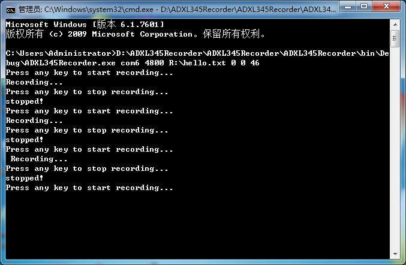
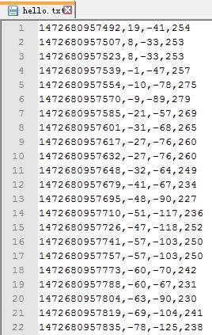

之前《用加速度计估算电梯上升或下降高度（一）——可行性验证》一文中，已经用一些现成的工具验证了这个项目的可行性，接下来就需要专业化了。
那个IBM的工程师说，要用arduino来采集数据，这个其实我是觉得无所谓，我觉得用8051也不错。虽然我最终改用了arduino，不过这里不贴出arduino的代码了。但不管硬件端采用什么架构，最终输出的数据格式都必须是：
0x55 0xAA <X低字节> <X高字节> <Y低字节> <Y高字节> <Z低字节> <Z高字节>
既然硬件端的数据输出格式确定了，那么就可以来制作专用的数据读取、记录软件了。之所以不使用现成的“串口调试助手”，一方面是因为那个不能准确记录得到数据的时间（我知道可以显示数据接收时间，但是当接收的是16进制数时完全乱套了），另一方面是不能直接转换为十进制。
我需要这么一个数据记录软件，通过指定串口号和波特率，就能够以0x55 0xAA为起始标志，把接下来的6个字节转换成3个10进制数，并且连同Unix时间戳（精确到毫秒）一起记录入文件。本来打算使用Java编写的，连同后面的数据处理和图像生成都用Java写，可是那个IBM工程师要求使用C#，好吧，我就只能破戒学咯。
====================阶段一：代码====================
代码200行不到，直接给出代码：
using System;
using System.Collections.Generic;
using System.Linq;
using System.Text;
using System.IO.Ports;
using System.IO;
namespace ZhouJianShi
{
class Program
{
static void Main(string[] args)
{
//=====================参数处理======================
if (args.Length < 6)
{
Console.WriteLine("usage: <comName> <baudRate> <outputFile> <offsetX> <offsetY> <offsetZ>");
return;
}
string comName = args[0];
int baudRate = Int32.Parse(args[1]);
string outputFile = args[2];
int offsetX = Int32.Parse(args[3]);
int offsetY = Int32.Parse(args[4]);
int offsetZ = Int32.Parse(args[5]);
//====================初始化==========================
ADXL345Recorder recorder = new ADXL345Recorder(comName, baudRate, outputFile);
recorder.setOffsetX(offsetX);
recorder.setOffsetY(offsetY);
recorder.setOffsetZ(offsetZ);
//====================交互式操作=====================
while (true)
{
Console.WriteLine("Press any key to start recording...");
Console.ReadKey();
Console.WriteLine("Recording...");
recorder.Open();
Console.WriteLine("Press any key to stop recording...");
Console.ReadKey();
recorder.Close();
Console.WriteLine("stopped!");
}
}
}
class ADXL345Recorder
{
//忽略起始的IGNORE次数据
private const int IGNORE = 512;
//串口
private SerialPort com;
//文件名
private string fileName;
//写入的文件
private StreamWriter file;
//当前忽略的次数
private long count = 0;
//阶段，当step=1时，表示还在等待0x55 0xAA，当step=2时，表示准备读之后的6字节数据
private int step = 1;
//上一次读到的字节
private int lastByte = 0;
//Unix时间戳的基准
private DateTime timeBase = DateTime.Parse("1970-1-1");
//x,y,z修正值
private int offsetX, offsetY, offsetZ;
public ADXL345Recorder(string comName, int baudRate, string fileName)
{
com = new SerialPort();
com.PortName = comName;
com.BaudRate = baudRate;
//8-n-1
com.DataBits = 8;
com.Parity = Parity.None;
com.StopBits = StopBits.One;
//设置回调函数
com.DataReceived += new SerialDataReceivedEventHandler(this.onDataReceived);
this.fileName = fileName;
}
public void setOffsetX(int offset)
{
this.offsetX = offset;
}
public void setOffsetY(int offset)
{
this.offsetY = offset;
}
public void setOffsetZ(int offset)
{
this.offsetZ = offset;
}
//开始记录入文件
public void Open()
{
count = 0;
lastByte = 0;
step = 1;
file = new StreamWriter(fileName, false);
com.Open();
}
//停止记录
public void Close()
{
com.Close();
file.Close();
}
//收到数据时的回调函数
private void onDataReceived(object sender, SerialDataReceivedEventArgs evt)
{
//如果还没达到指定的忽略次数，则继续忽略
if (count < IGNORE)
{
count++;
//清空缓存
while (com.BytesToRead > 0)
com.ReadByte();
return;
}
while (true)
{
if (step == 1)
{
//如果在等待0x55 0xAA，那么至少需要能够读取1个字节
if (com.BytesToRead == 0)
break;
int aByte = com.ReadByte();
//如果上次读到0x55而且这次读到0xAA，那么就进入阶段2（step=2）
if (lastByte == 0x55 && aByte == 0xAA)
step = 2;
lastByte = aByte;
}
else if (step == 2)
{
//至少需要6个字节
if (com.BytesToRead < 6)
break;
//Unix时间戳
long current = currentUnixTimestamp();
//6字节的原始数据
int xl = com.ReadByte();
int xh = com.ReadByte();
int yl = com.ReadByte();
int yh = com.ReadByte();
int zl = com.ReadByte();
int zh = com.ReadByte();
//重组13为到符合数据
int accX = trans(xl, xh) + offsetX;
int accY = trans(yl, yh) + offsetY;
int accZ = trans(zl, zh) + offsetZ;
//写入到文件
file.WriteLine(current + "," + accX + "," + accY + "," + accZ);
//重新等待0x55 0xAA，进入阶段一（step=1）
step = 1;
}
}
}
//重组13位数据
private int trans(int low, int high)
{
int result = (high << 8) | low;
//如果16位数据的高4位为1，那么就把32位数据的高16位都变成1
if ((result & 0xF000) != 0)
result = (~0xFFFF) | result;
return result;
}
//获取Unix时间戳
private long currentUnixTimestamp()
{
return (long)DateTime.Now.Subtract(timeBase).TotalMilliseconds;
}
}
}
Main函数内部的逻辑一目了然，就是读取命令行参数，然后用来初始化ADXL345Recorder实例。在while大循环内部，先要求用户按任意键开始记录，然后要求用户按任意键结束记录，如此循环。如果需要终止程序，直接按Ctrl+C结束进程即可。
其实ADXL345Recorder这个类的结构也很简单，重点就是onDataReceived()这个回调函数。在这个回调函数内部，首先是判断当前回调次数是否已经达到了指定的次数。这是为什么呢？因为当串口刚刚打开的时候，可能会输出一些杂乱的值，这些值必须过滤掉才行。接下来没有什么难度了。
另外需要注意的是C#中没有现成的获取Unix时间戳的函数，不像Java有
System.currentTimeMillis();
这个方法可以直接返回Unix时间戳，也就是距离1970年1月1日0时0分0秒的毫秒数。因为C#毕竟是Windows阵营的，与Unix有点对立的感觉。然而为了统一，我必须使用Unix时间戳，于是我就自己实现了获取Unix时间戳的方法
//获取Unix时间戳
private long currentUnixTimestamp()
{
return (long)DateTime.Now.Subtract(timeBase).TotalMilliseconds;
}
其中timeBase的定义为
//Unix时间戳的基准
private DateTime timeBase = DateTime.Parse("1970-1-1");
OK,代码就这么多。
=================阶段二：采集数据试验================
代码编译后，产生ADXL345Recorder.exe可执行文件。
把我的采集装置插上，可以在设备管理器中看见端口是COM6。8051的代码里面写的波特率是4800。我打算把采集的数据写入R:hello.txt文件中。考虑到我手头这个ADXL345在Z轴上需要一个46的修正值，所以调用命令如下：
ADXL345Recorder.exe com6 4800 R:hello.txt 0 0 46
于是输出如下：

可以通过按任意键不断地重新开始、结束。
看一下R:hello.txt采集到的数据：

正合我意！